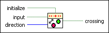

Boolean Crossing PtByPt VI
Owning Palette: Other Functions PtByPt VIs
Requires: Full Development System
Detects transitions of input. You can choose one of the following directions: either, false-true, or true-false.
 | Note By default, reentrant execution is enabled in all Point By Point VIs. |

 Add to the block diagram Add to the block diagram |
 Find on the palette Find on the palette |